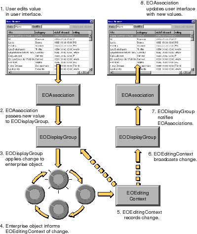

Table of Contents
Table of Contents  Next Section
Table of Contents
Next Section
Table of Contents  Previous Section
Previous Section

Figure 51. Flow of Events When a User Edits Data
How an EOEditingContext Manages Changes to Its Objects
From the standpoint of an EOEditingContext, the changes you make to objects in an application fall into one of three categories:
Note: When a source (master) object has an owning relationship to a destination object (as determined from the EOClassDescription) and the destination object is removed from the master, the destination object is marked for deletion from the EOEditingContext. For example, if a purchase order owns a line item and the line item is removed from the purchase order, the line item is marked for deletion from the editing context since the owning relationship implies that a line item can't exist without a purchase order.
When an EOEditingContext processes changes, typically at the end of an event, it does the following to the objects in its unprocessed changes list:
For a more detailed description of what this entails, see the following section, "How Deleted Objects are Processed."
The processing of deleted objects entails these steps:
By default, each object forwards this message to its EOClassDescription. Based on the result, the operation is either allowed or refused. For example, referential integrity constraints in your model might state that you can't delete a Department object that still has employees. If a user attempts to delete a department that has employees, the deletion is refused. An enterprise object class can also implement its own version of validateForDelete to do some additional processing before passing the check on to its EOClassDescription. For more discussion of validation, see the chapter "Designing Enterprise Objects".
Table of Contents Next Section